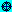

Set > Coordinate System command
The 2D-plot window coordinate system setting plays an important role in the plotting of expressions and displaying of coordinates. Use the 2D-plot window Set > Coordinate System command or press Ctrl+Y to select the coordinate system used to display cross coordinates and to plot expressions. The command presents a dialog box with the following fields:
• Rectangular: Click on this button to have subsequent expressions plotted using rectangular (Cartesian) coordinates. In rectangular coordinates the icon is displayed at the left end of the plot window status bar.
• Polar: Click on this button to have subsequent expressions plotted using polar coordinates. In polar coordinates the  icon is displayed at the left end of the plot window status bar. See Polar PlotsPolar_Plots for more information.
The following summarizes how 2D-plots of expressions, equations, and 2-element vectors are interpreted in these two coordinate systems:
Rectangular (Cartesian) coordinates:
If the expression u(t) is plotted and t is a variable other than y, Derive interprets t as a horizontal distance to the right of the y-axis and u(t) as the corresponding vertical distance above the x-axis. Whereas, if u(y) is plotted, Derive interprets y as a vertical distance above the x-axis and u(y) as the corresponding horizontal distance to the right of the y-axis.
If the equation s=u(t) is plotted and s is a variable other than x, Derive interprets t as a horizontal distance to the right of the y-axis and u(t) as the corresponding vertical distance above the x-axis. Whereas, if x=u(t) is plotted, Derive interprets t as a vertical distance above the x-axis and u(t) as the corresponding horizontal distance to the right of the y-axis.
If the vector [x(t), y(t)] is plotted, Derive interprets the expression x(t) as a horizontal distance to the right of the y-axis and the expression y(t) as the corresponding vertical distance above the x-axis. For more information see Parametric PlotsParametric_Plots.
Polar coordinates:
If the expression u(t) is plotted and t is a variable other than r, Derive interprets t as an angle measured counterclockwise from the positive x-axis and u(t) as the corresponding radial distance from the origin. Whereas, if u(r) is plotted, Derive interprets r as a radial distance from the origin and u(r) as the corresponding angle measured counterclockwise from the positive x-axis.
If the equation s=u(t) is plotted and s is a variable other than θ, Derive interprets t as an angle measured counterclockwise from the positive x-axis and u(t) as the corresponding radial distance from the origin. Whereas, if θ=u(t) is plotted, Derive interprets t as a radial distance from the origin and u(t) as the corresponding angle measured counterclockwise from the positive x-axis.
If the vector [r(t), θ(t)] is plotted, Derive interprets the expression θ(t) as an angle measured counterclockwise from the positive x-axis and r(t) as the corresponding radial distance from the origin. For more information see Parametric PlotsParametric_Plots.
Angles are measured in radians or degrees depending on the angle mode set by the Angular Unit fieldAngular_Unit_field of the algebra window’s Options > Mode Settings > Simplification command19_L5FP. Negative distances plot in the opposite direction of positive ones.
Other 2D-plot Window Set commandsTLP_GA
Created with the Personal Edition of HelpNDoc: Free iPhone documentation generator